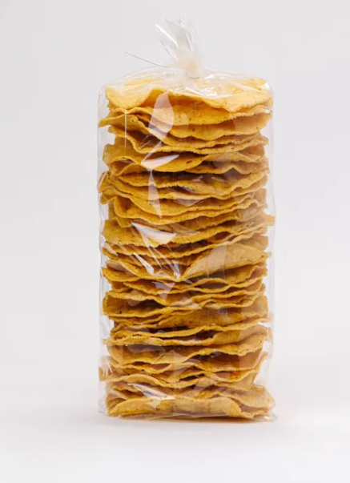

$40.00
Descripción
Tostadas de Maiz con Chapulines.
Tostada 100% oaxaqueña.
Ingredientes
Maíz Nixtamalizado, Agua purificada, Chapulines, sal y Aceite Vegetal
Contenido
Aproximadamente 27 piezas
Como base principal utilizamos el maíz, tesoro que la tierra nos brinda y forma
parte de nuestra cultura y tradición.